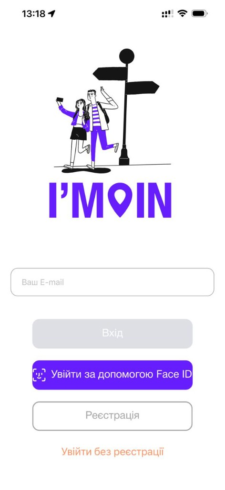
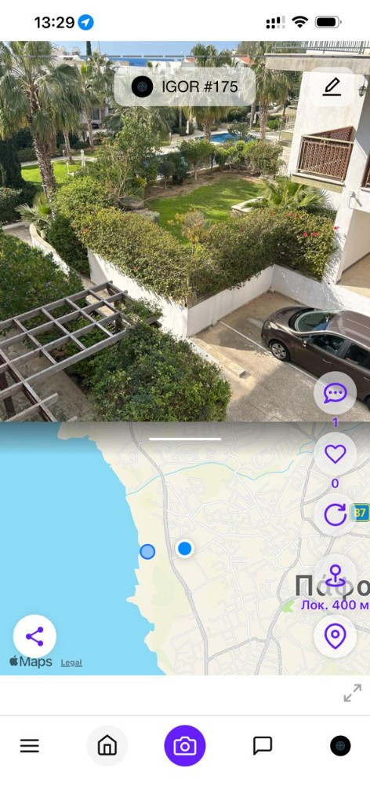
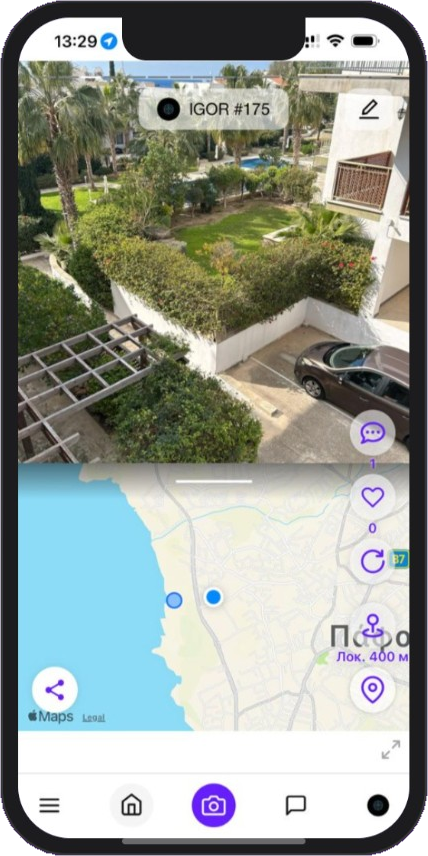

Мандруй, ділись, відкривай разом
Додаток для тих, хто любить подорожувати. Створюй маршрути, об'єднуйся в групи, залишай фото, відео та голосові повідомлення на місцях — для тих, хто прийде після тебе.


Про I'M IN
I'M IN — це додаток для людей, які люблять подорожувати та відкривати нові місця. Об'єднуйся в групи мандрівників, плануй спільні поїздки, домовляйся про зустрічі та збирай компанію для активного відпочинку.
Залишай фото, відео та голосові повідомлення на місцях для тих, хто прийде після тебе. Створюй групові альбоми та спогади, шукай друзів які вже побували в цікавих місцях та ділись своїми враженнями з усім світом.
Додаток в розробці — статистика з'явиться після запуску

Можливості додатку
Все що потрібно мандрівнику — в одному додатку
Маршрути та подорожі
Плануй мандрівки, створюй екскурсійні маршрути по містах та визначних місцях. Ділись готовими маршрутами з друзями та спільнотою.
Інтерактивна карта
Apple Maps або Mapbox на вибір. Переглядай карту з відмітками мандрівників, фото та повідомленнями. Знаходь цікаві місця поруч або плануй подорожі у нові міста.
Групи мандрівників
Об'єднуйся в групи для активного відпочинку та спільних подорожей. Домовляйся про зустрічі, плануй поїздки разом та збирай компанію.
Повідомлення на місцях
Залишай фото, відео та голосові повідомлення прямо на локаціях — для наступних відвідувачів. Дізнавайся, що кажуть ті, хто вже побував тут.
Групові альбоми
Створюй спільні фотоальбоми та спогади для груп. Збирай найкращі моменти подорожей в одному місці та ділись ними з друзями.
Відкривай місця
Знаходь цікаві місця, читай враження тих хто вже був, шукай приховані перлини від місцевих. Відмічайся та показуй свій досвід подорожей.
Знаходь друзів
Шукай людей які вже побували в цікавих місцях, підписуйся на мандрівників, обмінюйся досвідом та плануй спільні пригоди.
Відмітки та чекіни
Відмічайся в місцях де ти побував, збирай колекцію відвіданих локацій та показуй свій туристичний досвід іншим мандрівникам.
Голосові записи
Записуй голосові повідомлення та аудіогіди прямо на місцях. Розповідай історії, ділись враженнями та залишай голосові нотатки для інших.
Розповіді про місця
Пиши та читай розповіді про місця — від історичних фактів до особистих вражень. Створюй контент що допоможе іншим мандрівникам.
Планування подій
Створюй події та запрошуй друзів на спільні подорожі. Плануй екскурсії, походи та зустрічі з єдиного календаря.
Статистика подорожей
Відстежуй свої подорожі, переглядай статистику відвіданих місць, пройдених маршрутів та зібраних вражень. Змагайся з друзями.
Що нового
Останні оновлення додатку — березень 2026
Інтерактивний гід
Покрокові підказки на кожному екрані: карта, стрічка, створення подій, налаштування. З'являється автоматично. Повторити: Налаштування → Про додаток → Навчання.
Mapbox — новий провайдер карт
Тепер можна обрати між Apple Maps та Mapbox. Більше деталей, додаткові стилі та покращена карта для різних регіонів.
Вбудований фоторедактор
Фільтри, малювання, текст та корекція кольорів — обробляй фото прямо в додатку перед публікацією. Жодних сторонніх програм.
Шерінг через системне меню
Ділись подіями через iMessage, WhatsApp, Telegram чи будь-який інший додаток одним дотиком.
Розумні мініатюри
Автоматична генерація мініатюр для кожної події. Оновлюються лише при зміні медіа — швидко та ефективно.
Повна підтримка iPad
Адаптований інтерфейс для iPad з підтримкою обертання екрана — портретний та ландшафтний режими.
8 мов інтерфейсу
Українська, англійська, французька, іспанська, німецька, італійська, грецька та російська. Мова визначається автоматично.
Карта пригод
Інтерактивна карта — серце додатку. Бачте всі відмітки мандрівників, маршрути, фото та повідомлення на одній карті.
- Перегляд місць та фото на карті в реальному часі
- Фільтрація за категоріями: їжа, природа, архітектура
- Побудова маршруту одним дотиком
Разом цікавіше
Подорожуй не поодинці — знаходь людей із спільними інтересами, створюй групи та плануй пригоди разом.
- Групові чати та планування подорожей
- Спільні фотоальбоми та спогади
- Рейтинги мандрівників та досягнення
Залишай свій слід
Фото, відео, голосові записи, розповіді — кожен може залишити щось корисне та цікаве для наступних мандрівників.
- Мультимедійні повідомлення прив'язані до локацій
- Аудіогіди та голосові нотатки на місцях
- Розповіді, рейтинги та рекомендації від реальних людей
Як це працює
Почни свою пригоду за 6 простих кроків
Завантаж додаток
Скачай I'M IN з App Store або Google Play
Зареєструйся
Створи акаунт за кілька секунд
Слідкуй за івентами
Переглядай події у своїй локації або вибери іншу на карті
Додай івент
Фото, відео, опис та звукове повідомлення — координати автоматично
Додай друзів
Знаходь мандрівників та створюй спільноту
Відривайся!
Переглядай, спілкуйся, мандруй, обирай та відкривай нове
Скоро у вашому смартфоні
Додаток зараз в активній розробці. Очікуйте — скоро ви зможете завантажити I'M IN та приєднатися до спільноти мандрівників!
Часті питання
Відповіді на найпопулярніші запитання
Загальне
I'M IN — безкоштовний мобільний додаток для створення та перегляду подій на основі геолокації. Публікуйте фото та відео з прив'язкою до місця на карті, переглядайте що відбувається навколо вас у реальному часі, спілкуйтесь з іншими мандрівниками та підписуйтесь на цікавих авторів. Слоган: "Мандруй, ділись, відкривай разом".
I'M IN повністю безкоштовний. Немає підписок, прихованих платежів чи реклами. Завантажуйте, реєструйтесь та користуйтесь усіма функціями без оплати.
Наразі I'M IN доступний на iOS — iPhone та iPad. Додаток повністю адаптований для iPad з підтримкою обертання екрана. Android версія планується найближчим часом.
Інтерфейс підтримує 8 мов: українська, англійська, французька, іспанська, німецька, італійська, грецька та російська. Мова визначається автоматично при першому запуску, але можна змінити в налаштуваннях.
Ні. I'M IN потребує постійного інтернет-з'єднання (Wi-Fi або мобільні дані). Офлайн-режим відсутній — усі дані завантажуються з сервера в реальному часі. Єдиний виняток: подія, створена без інтернету, потрапляє в чергу та автоматично відправиться при появі з'єднання.
Так! У гостьовому режимі доступний перегляд карти та подій, пошук адрес, відкриття діп-лінків та зв'язок з підтримкою. Для створення подій, коментарів, лайків, друзів та повідомлень потрібна реєстрація.
Реєстрація та вхід
Реєстрація займає хвилину: підтвердіть email кодом (перевірте "Спам"), додайте фото профілю (необов'язково), ім'я та телефон. Потім створіть пароль і прийміть умови. Після реєстрації можна увімкнути біометричний вхід — Face ID, відбиток пальця або скан райдужної оболонки.
На екрані входу натисніть "Забув пароль" → введіть email → отримайте код на пошту (перевірте "Спам") → введіть код → задайте новий пароль. Код має термін дії.
1) Перевірте папку "Спам" або "Небажана пошта". 2) Зачекайте 1-2 хвилини. 3) Переконайтесь що email введений правильно. 4) Спробуйте запросити код повторно.
Карта та геолокація
Карта показує маркери подій та ваше місцеположення. Натискання на маркер — прокрутка стрічки до події. Довге натискання на маркері — адреса та координати. Довге натискання на карті — переміщення до нової точки. Доступні режими 2D/3D, звичайна/супутникова карта, пошук адреси.
В локальному режимі можливо немає подій поруч — спробуйте збільшити горизонт подій (200-600 м) в налаштуваннях або перемкніться на глобальний режим (кнопка глобусу), щоб побачити події з усього світу.
Натисніть кнопку пошуку (лупа), введіть назву міста або адресу — карта переміститься туди і завантажить події поруч. Або довго натисніть на будь-яку точку на карті.
Авто-режим автоматично оновлює стрічку подій при пересуванні — кожні 25, 50, 100 або 200 метрів. Екран не гасне. Ідеально для прогулянки або подорожі — ви бачите нові події навколо без ручного оновлення.
Створення подій
Натисніть кнопку камери → зробіть фото, відео (до 10 сек) або оберіть з галереї → додайте фільтр, голосове повідомлення, заголовок та опис → місцеположення визначається автоматично або вибирається на карті → "Зберегти". При нестабільному інтернеті подія збережеться в черзі завантаження.
Подія спочатку потрапляє у чергу завантаження (макс. 10 подій, до 3 автоматичних повторів). Перевірте Кабінет → Черга завантаження. При слабкому інтернеті завантаження чекає на з'єднання.
На екрані "Нова подія" → "Додати медіа" → "Галерея (фото)" → оберіть до 10 фото. Якщо фото мають GPS-мітки, кожна подія отримає свої координати. Спільний заголовок та опис застосовуються до всіх.
Соціальні функції
Друзі — двосторонній зв'язок: відкрийте профіль → "Додати в друзі" → другий прийме або відхилить. Друзі бачать контент навіть при приватному акаунті. Підписка — одностороння: підписуєтесь без підтвердження іншого, дозволяє фільтрувати стрічку за автором.
Обидва мають увімкнути "Передача геолокації" в налаштуваннях. Тоді на карті з'являться маркери з аватарами друзів у реальному часі. Інтервал оновлення: від 5 до 60 секунд. Працює у фоновому режимі.
Приватність та акаунт
Три рівні приватності: публічний (бачать усі), для друзів (лише друзі), приватний (тільки ви). Також: біометричний вхід (Face ID / відбиток), зміна пароля та email через код, блокування небажаних користувачів, максимум 10 активних сесій.
1) Перевірте Меню → Налаштування → Сповіщення (увімкнені?). 2) Системні налаштування пристрою (дозволено сповіщення для I'M IN?). 3) Не увімкнений режим "Не турбувати". Типи: запити на дружбу, події від друзів, події поблизу, спостережувані місця.
Кабінет → Видалення облікового запису → пароль → код з email → підтвердити. Увага: видалення безповоротне — усі дані, події, друзі та повідомлення видаляються назавжди.
В додатку: Налаштування → Підтримка (до 500 символів). Без авторизації: екран входу → Підтримка (вкажіть ім'я, email, телефон). На сайті: чат-бот на www.im-in.net або пошта info@im-in.net.
Зв'яжіться з нами
Маєте питання? Напишіть нам — ми відповімо якнайшвидше
Дякуємо!
Ваше повідомлення надіслано. Ми відповімо на вашу пошту якнайшвидше.